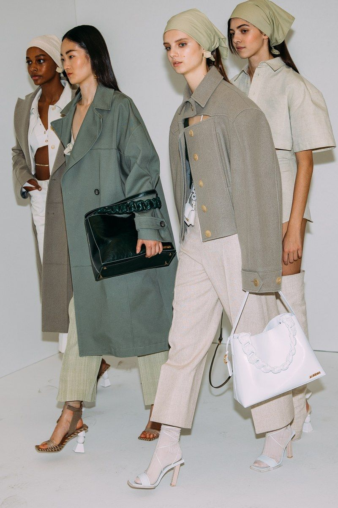
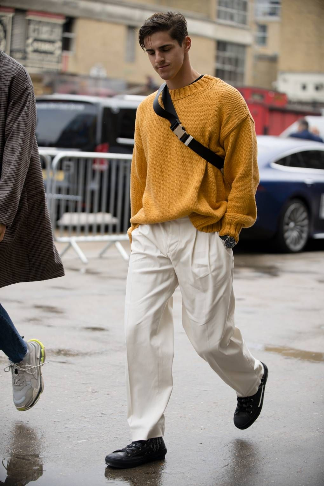

Complement, Don't match!
Complementary colors are on opposite sides of the color wheel from each other.
The key to using two complementary colors and without looking like a clown is to make one of them a darker shade.

One pop of color!
If your base outfit (shirt, pants, and shoes) is made up of neutrals, adding one pop of color doesn’t mess anything up.

Avoid tops that are too close to your skin tone!
Low level of contrast makes you appear pale and washed out.